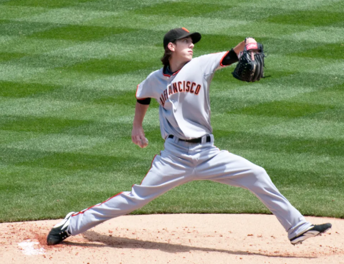
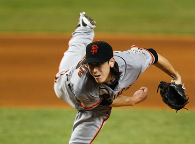

팀 린스컴
- 샌프란시스코 자이언츠 (2007~2015)
- 로스엔젤레스 에인절스 (2016)
타 종목에 비해 그나마 선수생활이 긴 야구에서 단 10년만을 불태웠던 선수임.
177cm의 왜소한 체격(참고로 메이저리스 선발 평균 신장은 190cm)을 극단적으로 역동적인 투구폼으로 극복한 선수.
참고로 저 투구폼이 미국 청소년들한테 엄청난 인기를 끌었는데,
레슬링도 아닌데 그의 투구폼 영상에는 'Do not try at home' 이라는 문구가 자주 등장했을 적으로 극단적인 폼이였음.
전성기때 그의 투구를 보자.
평슌 시속 151km, 최고 시속 162km으로 뿌려되던 패스트볼.
177cm에 80kg 도 안되는 선수가 극단적인 폼 하나로 저런 강속구를 던졌다는 거임.
시속 130km 초반대의 체인지업. 참고로 전성기때 헛스윙률 43%를 자랑했다.
평균 시속 130km 대의 슬라이더.
기똥찻지만 가득이나 극단적으로 역동적인 투구폼에 슬라이더 까지 던져대니 결론적으로 그의 전성기를 빠르게 마무리 시킨 구종.

실제로 저렇게 몸과 팔을 갈아넣는 투구폼 때문에 선수생활은 10년 남칫 짧았지만 얼마나 굵었냐고?
린스컴의 짧은 10년 선수생활 업적:
내셔널리그 사이영 상 2회
월드시리즈 우승 3회
MLB 올스타 4회 선정
내셔널리그 탈삼진왕 2회
노히트 노런 2회 달성
그냥 남들 인생에서 한번만 해도 성공적인 야구선수라고 평가 받는걸 10년동안 존나 굵직하게 다 해드시고 은퇴하심.
우와 업적 개쩌네